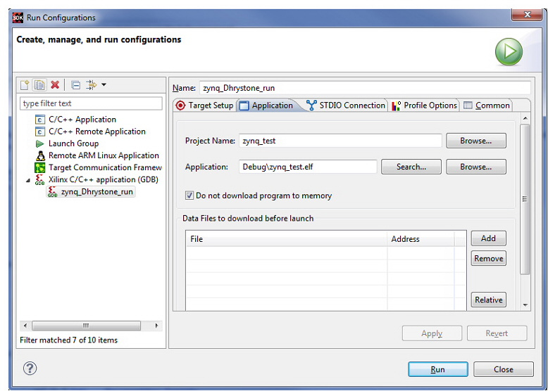

In the Application tab, set up the details for your application project and select the
ELF file.

- Do not download program to memory: If the program memory is a ROM such as
Flash memory, SDK cannot write to the memory contents. To debug such a ELF program,
select Do not download program to memory and download the program using another
method, such as the SDK Flash programmer.
- Downloading Data Files: If you need to download a data file, use this
option to specify the file to be downloaded and the address location.